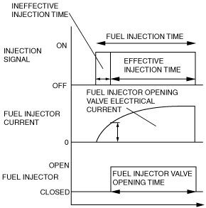
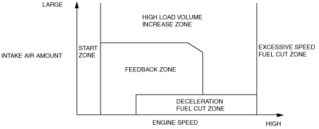
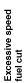
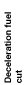

Technical Guide ➭ ENGINE ➭ CONTROL SYSTEM[L8, LF] ➭ FUEL INJECTION CONTROL OPERATION [L8, LF]
FUEL INJECTION CONTROL OPERATION [L8, LF]
id0140i7101900
• There is synchronized fuel injection, which performs fuel injection by the setting of the crankshaft position, and non-synchronized fuel injection which performs fuel injection when the condition for fuel injection is met regardless of the crankshaft position.
Synchronized fuel injection
• The crankshaft rotation is synchronized by each intake and exhaust stroke of the cylinders, and fuel injection is performed by the fuel injection timing and the injection amount corresponding to the input signals of the following sensors.
― CKP sensor, MAF sensor, ECT sensor, IAT sensor
Non-synchronized fuel injection
• The crankshaft rotation is not synchronized and fuel injection is performed by the injection timing and injection amount as triggered by the input signals of the following sensors.
― TP sensor, MAF sensor, ECT sensor, IAT sensor
Relation between synchronized and non-synchronized fuel injection
• If synchronized and non-synchronized fuel injection happen to occur together, fuel is injected by adding the fuel injection timing of both.
• The PCM calculates the fuel injection amount according to the engine operation conditions as the fuel injection time and energizes the fuel injectors.
Fuel injector energization time and operation conditions
• The fuel injectors cause an operation delay with the start of energization from the PCM. The PCM calculates the fuel injection time by adding the non-injection time (ineffective injection time) with the actual injection time (effective injection time), and energizes the fuel injectors for this time.
|
 c3u0140s014 |
• The fuel injection time is based on the following formula:
Fuel injection time = effective injection time + ineffective injection time
Ineffective injection time
― The fuel injectors cause a delay in operation due to a delay in the build-up of operation current from coil inductance with the start of energization, and by the mass of the needle valve and plunger, and spring resistance. This delay is the ineffective injection time.
― The non-injection time is affected by the change in battery voltage. Accordingly, the PCM sets the non-injection time according to the battery voltage
Effective injection time
― The fuel injector opening valve time which is the actual fuel injection time is called the effective injection amount.
Determination of Effective Injection Time
• The PCM divides the engine operation conditions into control zones according to engine speed and engine load and determines the effective injection time at each control zone to perform optimum air/fuel ratio control in all engine driving ranges.
|
 c3u0140s015 |
Purpose
• Improved engine startability
Operation condition
• When engine speed is 500 rpm or less.
Determination of fuel injection time
• According to engine coolant temperature (ECT sensor) and engine speed (CKP sensor)
Purpose
• Improved fuel economy
• Improved exhaust gas purification
Control condition
• During engine operation other than high load volume increase zone and engine start zone.
Determination of fuel injection time
• During normal driving, the amounts of various correction types are added to the basic injection time to set to the theoretical air/fuel ratio.
High load volume increase zone
Purpose
• Improved driveability
• TWC protection
Control condition
• Either the charging efficiency or the throttle valve opening angle is a fixed value or more.
Determination of fuel injection time
• Corrections are added to the basic injection amount and the high load coefficient is calculated according to the engine speed, mass intake airflow amount and the throttle valve opening angle.
Purpose
• Engine protection
Control conditions
• When the engine speed is 7,000 rpm or more (WOT).
• When engine speed is 5,500 rpm or more and the engine coolant temperature is approx. -15 °C {5 °F} or less.
• When the following conditions continue for 5 min or more:
― Vehicle is stopped.
― Engine speed is 1,500 rpm or more.
― Engine coolant temperature is approx. 40 °C {104 °F}.
• When the following conditions continue for 2 min or more:
― Vehicle is stopped.
― Engine speed is 3,000 rpm or more.
― Engine coolant temperature is approx. 40 °C {104 °F}.
• When the following conditions continue for 10 s or more:
― Vehicle is stopped.
― Engine speed is 6,500 rpm or more.
― Engine coolant temperature is approx. 40 °C {104 °F}.
Note• The PCM determines that the driver continues to unintentionally depress the accelerator pedal
Determination of fuel injection time
• Fuel injection time is set to 0 (fuel cut).
Purpose
• Improved fuel economy
• Prevents overheating of the catalytic converter
Control conditions
• When the engine conditions are as follows (10 s or longer after engine start):
― Fully closed throttle valve
― When the engine speed is at set value or more (differs depending on the ECT) (charging efficiency at fixed value or more, mass airflow sensor normal)
Determination of fuel injection time
• The fuel injection time is set to 0 (fuel cut).
Calculation method list for fuel injection time
A: Fuel injection time base, B: Correction for fuel injection time
|
Contents (Fuel injection time, calculation method, or determination method) |
Control zone |
||||||
|---|---|---|---|---|---|---|---|
|
 |
 |
||||||
|
Injection time at start |
Set value according to engine coolant temperature (low engine coolant temperature→long injection time) |
A |
|||||
|
Basic injection time |
Basic injection time = charging efficiency x fuel flow coefficient |
A |
A |
||||
|
Fuel cut |
Fuel injection time = 0 |
A |
A |
||||
|
Ineffective injection time |
Set time according to injector performance |
A |
A |
A |
|||
|
Volume increase correction at engine start |
Purpose: Maintains stability of engine speed just after engine start Correction condition • Specified time according to engine coolant temperature directly after engine start Correction amount • Low engine coolant temperature→large correction • Low intake air temperature→large correction |
B |
B |
||||
|
A/F sensor feedback correction |
Purpose: Controls air/fuel ratio to the theoretical air/fuel ratio Correction condition • When engine coolant temperature is at set value or more Correction amount • A/F sensor current value 0 mA or less→volume decrease correction • A/F sensor current value 0 mA or more→volume increase correction |
B |
|||||
|
HO2S feedback correction |
Purpose: Corrects feedback amount according to deterioration of A/F sensor and catalytic converter Correction condition • Engine coolant temperature is at set value or more • Engine speed is 500—4,250 rpm • Charging efficiency is 10—80% Correction amount • According to HO2S electromotive force→correction |
B |
|||||
|
D-range correction (AT) |
Purpose: Ensures engine speed stability during D-range shifting Correction condition • Throttle valve fully-closed and shifted into D range Correction amount • Low engine coolant temperature→large correction |
B |
|||||
|
High load volume increase correction |
Purpose: Improved engine output, decrease of exhaust gas temperature Correction condition • According to engine speed when the throttle valve opening angle is the fixed value or more, otherwise, according to engine speed and charging efficiency Correction amount • High engine speed, high charging efficiency→large correction |
B |
|||||
|
Warm-up volume increase correction |
Purpose: When engine coolant temperature is low, maintains combustion stability Correction condition • While at set engine coolant temperature Correction amount • High charging efficiency, low engine coolant temperature→large correction |
B |
B |
||||
|
A/C load increase correction |
Purpose: Maintains engine speed stability during A/C operation Correction condition • A/C is operating Correction amount • Low engine coolant temperature→large correction |
B |
B |
||||
|
Acceleration increase correction |
Purpose: Corrects fuel injection delay during acceleration to ensure drive stability Correction condition • When acceleration amount (change in the amount of charging efficiency) is at set value or more Correction amount • Low engine coolant temperature→large correction • Large acceleration amount→large correction |
B |
B |
||||
|
Deceleration volume increase correction |
Purpose: Ensures engine speed stability after fuel cut recovery Correction condition • When recovery from fuel cut Correction amount • Low engine speed→large correction |
B |
|||||
|
Learning correction |
Purpose: Corrects deviation in air/fuel ratio from changes due to aged deterioration of mechanical devices Correction condition • Under any condition except purge control Correction amount • Learning value based on average of feedback correction value |
B |
B |
||||
|
Intake air pressure correction |
Purpose: Corrects ineffective charging time deviation from change in intake manifold vacuum Correction condition • Under any condition except start zone Correction amount • More intake manifold vacuum→large correction |
B |
B |
||||
• Includes fuel cut under the following conditions except fuel cut at excessive engine speed according to engine operation and deceleration fuel cut.
Purpose
• To prevent engine damage from abnormal ignition due to a malfunction input of a cylinder identification or the engine speed signal.
Control condition
• When damage to the crankshaft position sensor or camshaft position sensor is detected.
Purpose
• To improve engine starting startability when spark plugs are flooded.
Control conditions
• When cranking close to fully-open throttle valve
Fuel cut during immobilizer system activation
Purpose
• To prevent vehicle theft
Execution conditions
• When an engine stop request signal is received from the immobilizer system, the PCM force-stops the fuel injectors. Therefore the engine stops.